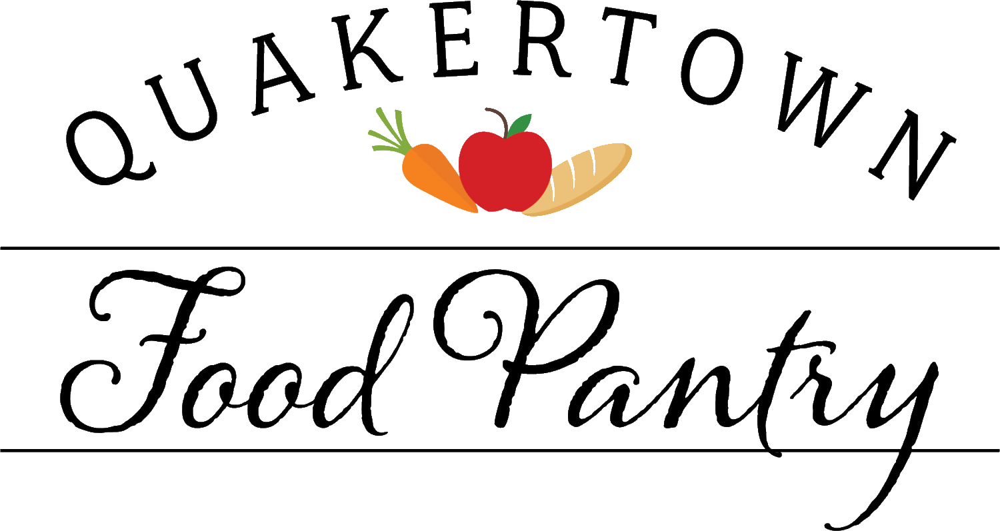

Quakertown Food Pantry
Start Here
Your new-volunteer cheat sheet — everything you need for day one
First, the one rule that matters most: confidentiality
Please do not divulge, under any circumstances, the identity of any client coming to the pantry. Do not access or discuss client information with anyone.
Anyone asking for information about another client should be directed to the Shift Supervisor, who will take appropriate measures.
1 Your first shift
- Arrive a few minutes early and check in with your Shift Supervisor — they'll be expecting you.
- You'll be paired with an experienced volunteer who shows you the ropes. You won't be thrown in alone.
- Wear comfortable clothes and closed-toe shoes — there's standing and some light lifting.
- Just bring yourself (a water bottle's a good idea). No experience needed.
Where to go & where to park: Christie — add your door/parking detail here
2 Your Shift Supervisor & calling out
Your Shift Supervisor runs your shift and is your go-to for any question. Save their contact info — you're responsible for keeping it handy.
- If you can't make a shift, text or call your Shift Supervisor as soon as possible.
- A minimum 2-hour notice is required so we can find coverage.
- Can't reach them? Contact a Management Team or Board member (in the handbook).
→ Everything else lives in the Volunteer Handbook
Mission, full policies, cleaning duties, shift & GAH schedules, civil rights training, and all contact lists. The contact and schedule sections are password-protected — ask your Shift Supervisor for the password.